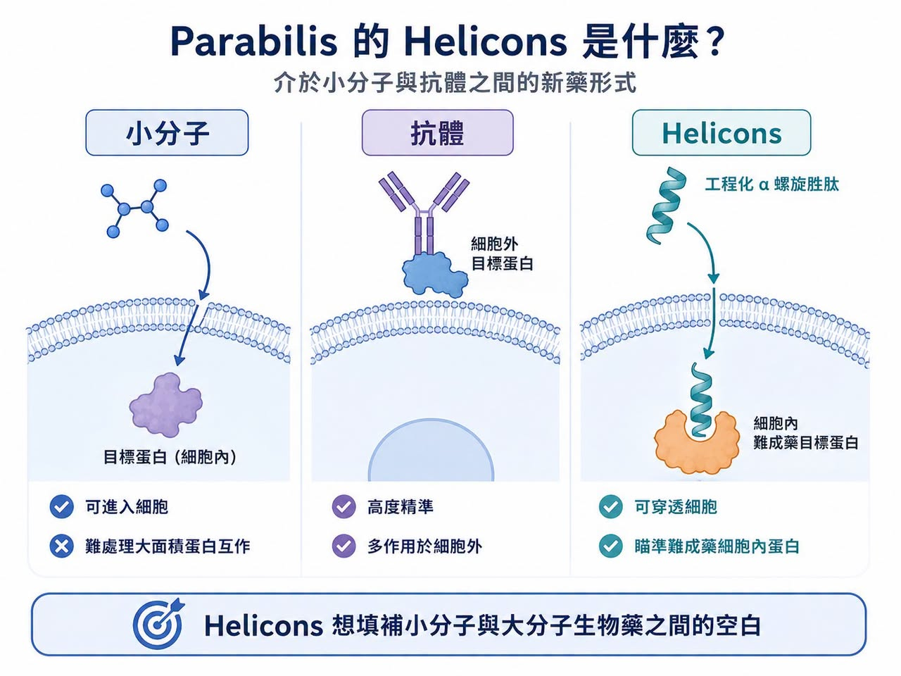
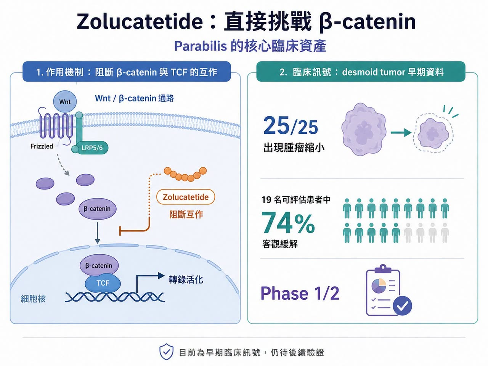
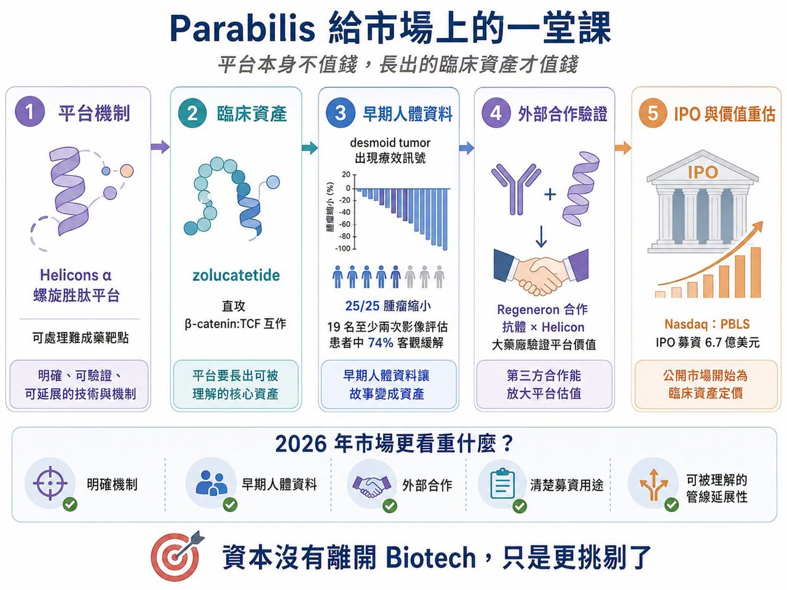
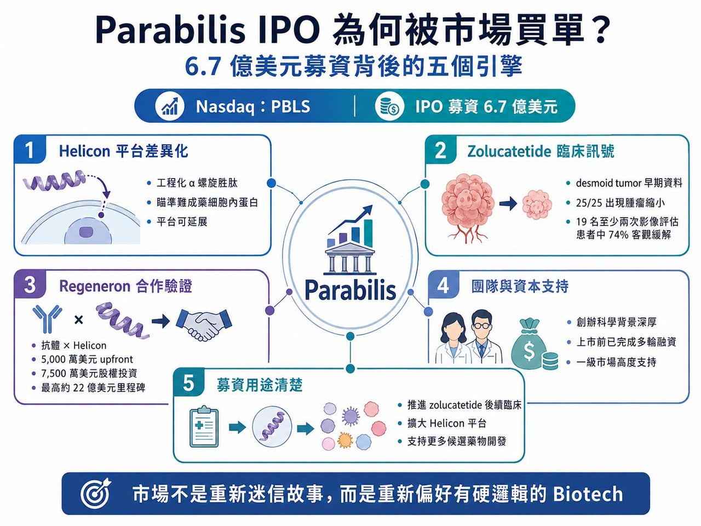

Parabilis 給市場上的一堂課

台股生技板塊還在低谷裡掙扎，美股生技市場卻突然打出一個極端反差。
分享這篇分析
把這篇文章轉給關注生技醫藥、公司研究或資本市場的朋友。
2026 年 6 月 10 日，Parabilis Medicines 正式登陸 Nasdaq，股票代號 PBLS。
這家公司原本計畫募集約 4.75 億美元，最後 IPO 規模上修至 6.7 億美元，成為美股史上最大 Biotech IPO 之一。上市首日股價也大幅上漲，顯示公開市場對這類臨床階段平台型公司的風險胃口正在回溫。有趣的是，市場到現在也很難用一句話解釋：為什麼偏偏是 Parabilis 創下紀錄？
它還沒有產品上市，核心藥物 zolucatetide 也還在臨床開發中，距離真正商業化仍有距離。從傳統財務角度看，Parabilis 不是一家已經有穩定現金流的藥廠，而是一家高度仰賴臨床資料與平台想像的 Biotech。但這正是它的代表性。Parabilis 的 IPO 說明，美股生技市場並不是不買創新藥了，而是更挑剔了。市場不再願意為空泛概念買單，卻仍然願意為「技術差異清楚、靶點邏輯明確、臨床資料已有初步驗證、管線延展性可被理解」的公司支付高估值。
換句話說，資本沒有離開 Biotech。
它只是從「故事驅動」轉向「臨床與資產邏輯驅動」。
01｜Parabilis 到底在做什麼？不是小分子，也不是抗體，而是 Helicons

Parabilis 的核心技術是 Helicons。
這是一類經過工程化設計、穩定化改造的 α 螺旋胜肽。簡單說，它想做的是一種介於小分子與大分子生物藥之間的新型藥物形式。傳統小分子可以進入細胞內，但面對蛋白與蛋白之間的大面積作用界面，常常找不到適合結合的口袋。抗體很精準，但大多只能作用於細胞外靶點，對很多細胞內蛋白、轉錄因子、蛋白-DNA 相互作用幾乎無能為力。
這也是製藥業長期面對的難題：很多疾病靶點在生物學上非常重要，卻因為結構太平、太大、太動態，或位於細胞內，而被稱為「難成藥靶點」。
Helicons 想填補的，就是這個空白。
Parabilis 形容自己的 Helicon 平台，是一種可以穿透細胞、調節傳統藥物難以處理的細胞內蛋白的新型 α 螺旋胜肽。公司官網也將其定位為能夠調控過去常規藥物難以觸及靶點的藥物平台。這種技術如果成立，意義不小。因為它不只是多一種藥物形式，而可能打開一批過去被擱置的靶點。
02｜Zolucatetide：直接挑戰 β-catenin，這是最硬的一塊骨頭

Parabilis 最核心的臨床資產是 zolucatetide，過去代號 FOG-001。
它瞄準的是 Wnt／β-catenin 訊號通路。Wnt／β-catenin 是腫瘤與多種增生性疾病中非常重要的通路。問題是，β-catenin 長期被視為非常難做的靶點，因為它不是典型小分子容易鑽進去的酶口袋，而是靠蛋白與蛋白相互作用去驅動轉錄訊號。
Zolucatetide 的設計邏輯，是直接阻斷 β-catenin 與 TCF 的相互作用。這是 Wnt 通路下游非常關鍵的一步，也是一個長期被認為難以直接藥物化的節點。Parabilis 官網指出，zolucatetide 正在一項首次人體 Phase 1/2 試驗中，用於局部晚期或轉移性實體瘤患者，且其作用機制是阻斷 β-catenin:TCF 蛋白相互作用。
目前最受關注的適應症，是 desmoid tumors，也就是侵襲性纖維瘤或硬纖維瘤。這類疾病雖然不是典型惡性癌症，但局部侵襲性強，可能造成疼痛、壓迫、器官功能受損與反覆復發。傳統上常涉及手術、觀察、激素或標靶治療，但仍缺少真正理想的精準療法。
Zolucatetide 在早期資料中已顯示腫瘤縮小訊號。根據公開報導，截至 2026 年 2 月，25 名接受治療且可評估患者均出現某種程度的腫瘤縮小。其中有至少兩次治療後影像掃描的 19 名患者中，74% 依 RECIST 1.1，也就是實體瘤療效評估標準，達到客觀緩解。
這就是 Parabilis 能打動資本市場的核心：
它不是只說自己能處理難成藥靶點，而是已經拿出第一個臨床訊號。
03｜Regeneron 合作，讓平台價值被產業驗證

Parabilis IPO 前另一個重要事件，是與 Regeneron 達成合作。雙方合作開發 Antibody-Helicon Conjugates，可以理解為抗體與 Helicon 結合的新型藥物模式。Regeneron 提供抗體能力，Parabilis 提供 Helicon 平台，目標是讓抗體的靶向能力與 Helicon 的細胞內作用能力結合起來，開發針對傳統難成藥靶點的新療法。
Regeneron 公告指出，這是一項多靶點合作，結合 Regeneron 的抗體平台與 Parabilis 的 Helicon 技術。Parabilis 可獲得 5,000 萬美元 upfront，也就是簽約首付款、7,500 萬美元股權投資，以及最高約 22 億美元里程碑付款。
這筆合作很重要。
它讓 Parabilis 不只是資本市場喜歡的故事，也成為大藥廠願意下注的平台。對 Biotech 來說，IPO 前能拿到這種產業合作，意義非常大。它等於告訴公開市場：這套技術不是只有投資人相信，像 Regeneron 這樣的研發型大藥廠也願意把它放進未來平台策略。這種外部驗證，往往比簡報裡的願景更有說服力。
04｜為什麼是 Parabilis？答案不是單一因素
Parabilis 的成功，不可能只用「技術新」來解釋。
創辦團隊是關鍵之一。
Parabilis 的科學根基與 Gregory Verdine 有很深關係。Verdine 是哈佛大學教授，也是 stapled peptide 技術的重要開創者之一。所謂 stapled peptide，就是透過特殊化學連結，把胜肽固定在穩定的 α 螺旋構型，提高穩定性、細胞穿透能力與成藥性。
這類技術過去已經在產業裡走過很長時間，並非一夜之間冒出來的概念。Parabilis 的 Helicons，更像是多年化學生物學、胜肽工程、非天然氨基酸、交聯技術與現代計算設計疊加後的結果。
資本積累也是關鍵。
Parabilis 在 IPO 前已經完成多輪大規模融資，2025 年初還完成 3.05 億美元私募融資。上市前，公司累積募資已相當可觀，代表它本來就已在一級市場得到重度資本支持。再加上早期臨床資料、Regeneron 合作、IPO 市場回暖，幾個條件同時疊在一起，才造就這次紀錄。
所以，Parabilis 不是偶然爆紅。
它是技術、臨床、團隊、資本、產業合作和市場窗口同時對齊的結果。
05｜這是美股 Biotech IPO 回暖，但不是概念股回暖
Parabilis 的 IPO 也不能孤立看。
2026 年美股 Biotech IPO 明顯回溫。公開報導指出，市場在波動後重新恢復動能，多家公司開始測試投資人胃口。也有報導指出，Parabilis 的 6.7 億美元 IPO 超越 Kailera Therapeutics 先前 6.25 億美元 IPO，成為新的 Biotech IPO 紀錄。
但這波回暖和 2020、2021 年不同。當年市場願意為平台故事、早期概念、熱門賽道提前支付非常高的溢價，現在市場更現實。
它要看臨床資產。
要看資金用途。
要看大藥廠合作。
要看產品有沒有清楚開發路徑。
例如 Kailera 能成功上市，核心是肥胖與 GLP-1 相關管線仍然是全球最熱、也最具商業想像的市場之一。Kardigan 則被市場看重其後期心血管資產與臨床導向策略。這說明公開市場不是全面放水。
它只是重新打開門，但只讓更成熟、更具資產邏輯的公司先進來。
概念型 Biotech 仍然不容易。真正被看見的，是那些有清楚臨床節點、明確疾病邏輯和足夠資金需求的公司。
06｜這件事對台灣生技的啟示
Parabilis 給台灣生技非常重要的提醒：
平台本身不值錢，平台長出的臨床資產才值錢。
如果要找相對貼近的新面孔，可以看幾類公司。
第一類是逸達（6576）。
逸達不是做 Helicons，也不是做難成藥蛋白交互作用，但它的核心邏輯同樣是「特殊劑型平台長出可商業化產品」。逸達的 CAMCEVI 來自長效注射劑型平台，已在美國上市，且三個月劑型也進入 FDA 審查。這類公司和 Parabilis 的共通點不是技術相同，而是都要證明平台能連續產出具有商業價值的產品。
第二類是竟天生技（6917）。
竟天主打新穎藥物傳輸系統，包含帶狀皰疹後神經痛噴霧劑 APC101、骨關節炎消炎止痛泡沫劑 APC201、局部麻醉複方乳膏 APC501 等新劑型產品。這不是 Parabilis 那種高風險腫瘤平台，而是更接近台灣可行的「藥物傳輸與劑型創新」。
第三類可以看傑安生技
雖然不是上市櫃主流標的，但它的 PDC，也就是 peptide-drug conjugate（胜肽藥物複合體）概念，與 Parabilis 所代表的胜肽新藥形式有一定呼應。傑安公開資料指出，公司開發 PDC 技術平台，利用 peptide 攜帶藥物辨識癌細胞表面受體，應用於非小細胞肺癌等方向。
結語｜Parabilis 創紀錄 IPO，不是市場瘋了，而是資本重新尋找硬科技資產
Parabilis 的 6.7 億美元 IPO，並不代表 Biotech 牛市已經全面回來。也不代表所有創新藥公司都能重新高估值上市。它真正代表的是一個方向：資本市場仍然願意買高風險創新，但它要看到硬邏輯。
什麼是硬邏輯？
難成藥靶點要有明確機制。
平台要有臨床產品。
產品要有早期人體資料。
外部合作要能驗證技術價值。
IPO 募資要有清楚用途。
這就是 Parabilis 被買單的原因。它不是已經成功商業化的公司，但它的每一層故事都能接得上：Helicons 解決難成藥靶點，zolucatetide 挑戰 β-catenin，desmoid tumor 資料提供臨床訊號，Regeneron 合作提供產業驗證，IPO 資金則用於推進 Phase 3 與平台擴張。
這樣的公司，市場願意等。
Parabilis 的出現，提醒我們一件事：Biotech 的冬天不會永遠持續，但春天也不會平均降臨。
它只會先照到那些真正有硬實力、硬資料、硬資產的公司。
參考資料：
[0]: Parabilis Medicines 官方網站與投資人關係資料，https://parabilismed.com/
[1]: Parabilis Medicines, "Parabilis Medicines Announces Pricing of Upsized Initial Public Offering", 2026-06-09, https://investors.parabilismed.com/news-releases/news-release-details/parabilis-medicines-announces-pricing-upsized-initial-public
[2]: Parabilis Medicines, "Parabilis Medicines Announces Closing of Upsized Initial Public Offering, Including Full Exercise of Underwriters’ Option to Purchase Additional Shares", 2026-06-11, https://investors.parabilismed.com/news-releases/news-release-details/parabilis-medicines-announces-closing-upsized-initial-public
[3]: Parabilis Medicines, "About Helicons", https://parabilismed.com/innovation/about-helicons/
[4]: Parabilis Medicines, "Zolucatetide", https://parabilismed.com/program/fog-001/
[5]: Parabilis Medicines, "Parabilis Medicines Announces Strategic Collaboration with Regeneron Pharmaceuticals to Advance Novel Antibody-Helicon™ Conjugates Across Multiple Therapeutic Areas", 2026-05-18, https://investors.parabilismed.com/news-releases/news-release-details/parabilis-medicines-announces-strategic-collaboration-regeneron
[6]: Parabilis Medicines, "Parabilis Medicines Announces Oversubscribed $305 Million Financing to Support Ongoing FOG-001 (zolucatetide) Clinical Development Across a Broad Range of Tumors and Advance Pioneering Pipeline and Helicon Platform", 2026-01-08, https://investors.parabilismed.com/news-releases/news-release-details/parabilis-medicines-announces-oversubscribed-305-million
引用本文
若在簡報、報告或社群討論引用，建議附上 Drugnews 原文連結。
Drugnews 編輯部，〈美股迎來史上最大 Biotech IPO〉，Drugnews｜藥時事，2026/06/29，https://drugnews.com.tw/articles/2026-06-29-biotech-ipo.html